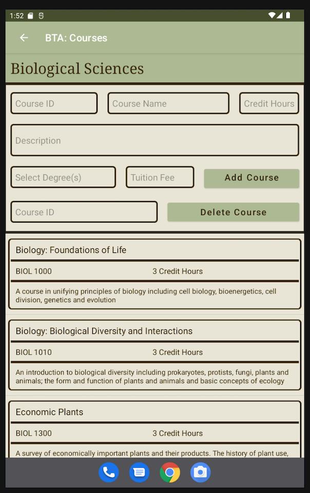
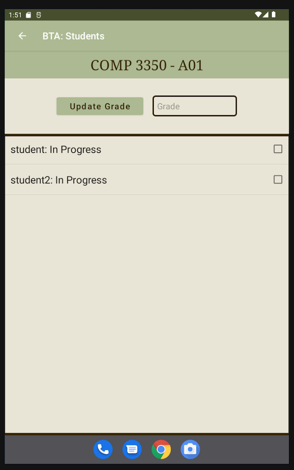
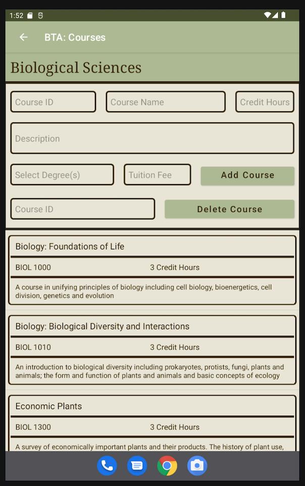
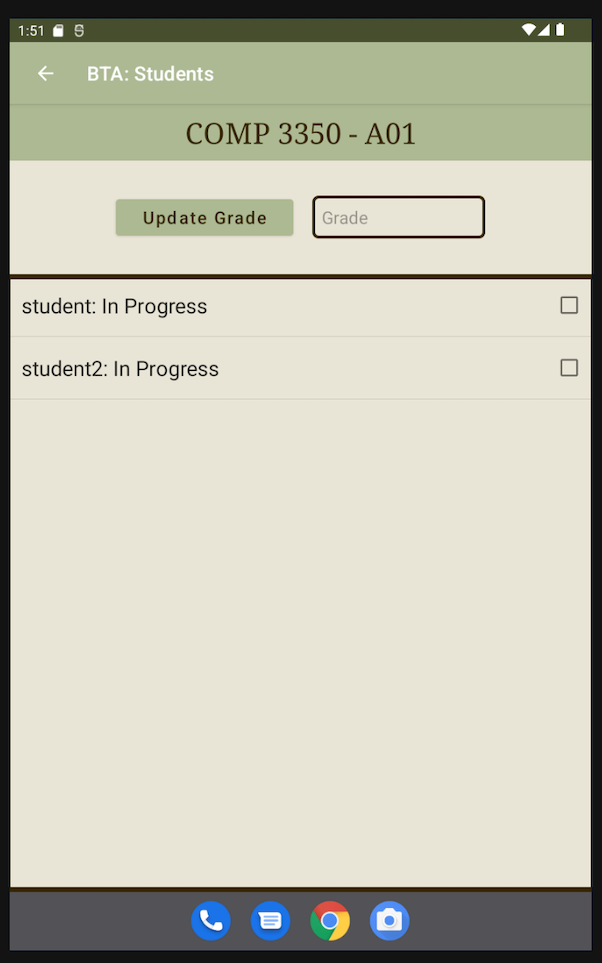

VISION
The Better Than Aurora(BTA) Registration System is designed to assist students
in progressing towards a designated degree by allowing them to enroll in prerequisite
courses as well as keep track of completed ones. The system will also provide a
detailed, editable, and up to date program plan with basic registrar’s office features.
The goal of creating the system to make registration an easy process for the students.
Therefore, it will be primarily designed for students. However, instructors, student
advisors, and administrators are needed extensively to ensure registration within the
system goes smoothly.
USERS
This software is designed mainly for students and administrators, with some functions available
for instructors and advisors.
It is for users in university that need a quick and convenient
way of accessing student rescords and course information.
If a student needed
to quickly check their registration date, or quickly edit their course list, or if an
administrator needed to quickly access and check student records, this application
is made for those moments where they don't have access to a computer to do these tasks.
Advisors and instructors are also able to quickly access course and student information for viewing,
and for instructors, they can even add grades for their students to see.
MAJOR FUNCTIONS
Students can add and drop courses, access information about past
and current courses, pay tuition, request official documents, and see the completed
credit hours towards the desired degree. The system will additonaly help students know
which prerequisites are required for course registration as well as notify them if
they have any holds on their account that could prevent them from adding courses.
Finally, the BTA will also allow students to access a catalog for details such as the
code, title description, and availability of each course.
Administrators will have the highest access to the system as they are the ones
that will be maintaining and updating the entire database. In BTA administrators can
create new student accounts, remove existing student accounts, change the courses
available for registration, and change details of all the courses listed
(name, professor, time, location, number of students that can register.).
Administrators will also be able to set when a course is available for registration
as well as put holds on certain students’ accounts so that they cannot register.
Advisors have access to viewing student information, and professors can see students registered
into their class and also publish their grades.
 


